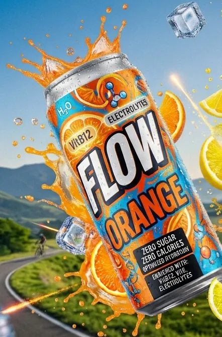
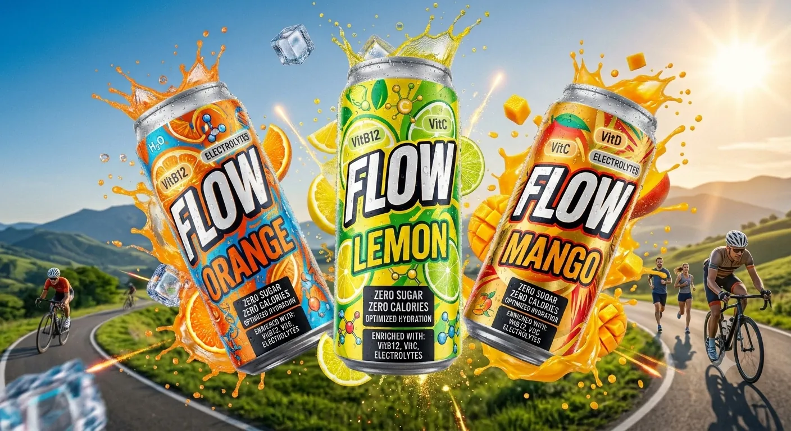

Pills & sachets
B12 tablets, D3 sachets
- Full dose
- Feels like medicine
- One more habit to remember
AAHAR Nutrition · Daily B12 + D3 hydration
Your daily B12 + D3, minus the sugar.
One 300 ml can covers the full adult daily requirement of vitamin B12 and vitamin D3, adds vitamin C and light electrolytes, and is sweetened with stevia.[10]

Concept render, not final artwork
The problem
Low vitamin B12 and vitamin D build up quietly. B12 occurs naturally almost only in animal foods,[26] and 39% of Indian adults are vegetarian.[32]
B12 deficiency in vegetarian vs mixed-diet urban adults, South India[4]
of pregnant vegetarian women are B12-deficient, across reviewed studies[5]
of Indian adults are vitamin D deficient (meta-analysis)[24]
Share of people with low serum B12, by group
Percent of each group below the study's B12 cut-off
Sources: [1] CNNS 2016–2018. [2] Urban school study, PLoS ONE 2022. [3] Indian meta-analysis, 26 studies. Cut-offs differ between studies.
Fatigue, weakness and anemia.[7]
Memory loss and poor concentration.[7]
Vitamin D is needed to absorb calcium. Deficiency weakens bones.[25]
Vegetarians, pregnant women and anyone whose diet is low in animal foods. The damage is slow and easy to miss.
One can a day covers the adult B12 and vitamin D requirement. Persistent symptoms need a blood test and a doctor.
Try it
Add what you ate today and see how close you get to the adult RDA of 2.2 µg.[10] Dal, roti, rice and vegetables add nothing.
Serving values are approximate, from the NIH Office of Dietary Supplements B12 fact sheet.[26] Chai assumes about 50 ml of milk per cup. This is an illustration, not a diagnosis.
Today's total
New · Nutri Coffee
A packaged iced coffee with zero sugar and high protein, plus vitamins B12, C and D. Real coffee caffeine keeps you energised and focused while the nutrients cover what a normal cup leaves out.
Concept illustration, not final artwork
In development. Protein amount, vitamin doses and caffeine content will be set after formulation and tested like FLOW's. Nothing on this page is a final label claim.
Morning
Your daily coffee, made nutritious. Protein, vitamins and caffeine in one pack, with no sugar.
Any time of day
The caffeine-free can. Vitamin B12 and D3 at 100% of the adult requirement, plus vitamin C and light electrolytes.
Today's choices
Every way of getting B12 today trades away something people care about.
A plant-sweetened daily can with 100% of adult B12 and vitamin D3, plus vitamin C, and zero sugar or caffeine. We found no ready-to-drink like it in India.
Label data from brand pages, Oct 2026: vitaminwater India[15], Red Bull India[27], Fast&Up[28], Electral[37], Glucon-D[38]. Our product search is not exhaustive.
Inside the can
Nothing that does not belong in a daily drink. Tap an ingredient to see its dose and why it is there.
| Ingredient | Dose per can | Role | Adult reference |
|---|---|---|---|
| Cyanocobalamin (vitamin B12) | 2.2 µg label; ~3 µg added | Prevents deficiency; blood and nerve health | RDA 2.2 µg/day[10] |
| Cholecalciferol (vitamin D3), lichen-derived, cold-water-dispersible | 15 µg (600 IU) label; overage set by stability data | Calcium absorption; bone health[25] | RDA 15 µg/day[10]; upper limit 100 µg/day[41] |
| Ascorbic acid (vitamin C) | 40 mg label; 60–80 mg added | Antioxidant; natural tartness | RDA 80 mg men, 65 mg women[10] |
| Citric acid | 0.6–0.9 g | Tartness; keeps pH at 3.3–3.8 | No RDA; food additive |
| Sodium + potassium citrate | 0.3 g + 0.15 g (~70 mg Na, ~55 mg K) | Buffer and electrolytes | WHO: under 2,000 mg Na, at least 3,510 mg K per day[11] |
| Steviol glycosides (stevia) | 40–80 mg | Zero-calorie sweetener | ADI 4 mg/kg body weight/day[12] |
| Natural flavours (orange, lemon, mango), beta-carotene | as needed | Taste and colour | n/a |
Doses are the team's design values. The D3 dose is a proposal pending stability data.
Our innovation
Acidic drinks destroy vitamins. FLOW is engineered around four threats.
Threat · Chemistry
Vitamin C speeds up B12 loss in solution.[23]
FLOW's defence
Cyanocobalamin, the most resistant B12 form,[13] plus an overage: about 3 µg added for a 2.2 µg label.
FLOW's defence
A light-proof aluminium can.
8 weeks at room temperature and at 37–40 °C, in light and in dark. Lab assays of B12 and D3 at the start, middle and end.
Head to head
Label facts per serving. Pick what matters to you and watch the field narrow. Fast&Up Reload is our closest rival.
Proven abroad, missing in India. Acti-Vit (UK) already sells an acidic sparkling can with vitamins D, B12 and C.[16][44] Its 5 µg of vitamin D meets the EU reference but is a third of India's RDA.
% RDA uses the ICMR-NIN adult B12 RDA of 2.2 µg.[10] Label pages, Oct 2026.
Regulatory readiness
The product category is our main risk, and we have a plan for it.
Per 100 ml, against FSSAI (Advertising and Claims) Regulations 2018 thresholds.[33] The dark tick marks each threshold.
Vegetarian green dot, with lichen-derived D3[45]
FSSAI's standard for still water-based drinks does not list vitamins, and a 2023 FSSAI order keeps these drinks outside the 1-RDA vitamin allowance.[34][35] Two routes are open:
The carbonated-water standard permits vitamins.[34] Stevia approval still to check.
Nutraceutical rules cap nutrients at 1 RDA, which FLOW meets.[36] Drink format still to confirm.
Next step: a regulatory consultant reviews both routes before the pilot batch.
The market
India's functional beverage market is set to nearly triple by 2034.[29]
Circle areas drawn to scale. SOM is an illustrative target, starting in Delhi NCR.
Business model
A daily-use drink with four routes to the customer.
Monthly can packs from our own website. Repeat revenue from a daily habit.
Blinkit, Zepto and Swiggy Instamart, where functional drinks are outgrowing regular ones.[40]
Campus cafeterias, gyms and corporate wellness programmes.
Modern trade and pharmacy chains once the brand is proven.
Revenue engine
High repeat purchase, and subscriptions lift lifetime value.
Pricing
We will price once bench batches, packaging and premix costs are measured.
Go-to-market
Start where B12 risk and drink demand meet: campuses, gyms and offices in Delhi NCR.
Months from the start of the pilot
Months 0 to 6
Months 6 to 18
Months 18 to 36
Prototype roadmap
Impact beyond the can
Tackles hidden hunger: B12 and vitamin D, two of India's most widespread micronutrient gaps.[3][24]
A zero-sugar daily option in a country with 101 million people living with diabetes.[31]
Recyclable aluminium cans instead of single-use PET bottles, which also protect the vitamins.[17][18]
The team
7th-semester B.Tech Biotechnology, School of Biosciences and Technology, Galgotias University.
Our ask
We are raising a seed grant or incubation funding. It will pay for:
Karan Tandon, co-founder
Campus pilot · Delhi NCR
FLOW launches first at Galgotias and Delhi NCR colleges, gyms and offices. Tell us who you are and what you would like to do.
Your name here
Not yet. FLOW is at the prototype stage. An eight-week stability study comes first, then a pilot batch with a co-packer and a campus launch in Delhi NCR.
No. FLOW is a daily drink for prevention. Persistent symptoms such as fatigue, numbness or tingling need a blood test and a doctor.
Yes. The vitamin D3 comes from lichen, not an animal source, so FLOW can carry the green dot.
Light and oxygen destroy vitamins. Aluminium blocks both and is recyclable, while clear PET can lose up to three quarters of its vitamin C in three months.
The price will be set after the Week 8 cost sheet, once we have measured what bench batches, cans and premix actually cost.

DAILY B12 + D3 · ZERO SUGAR · ZERO CALORIES · ZERO CAFFEINE